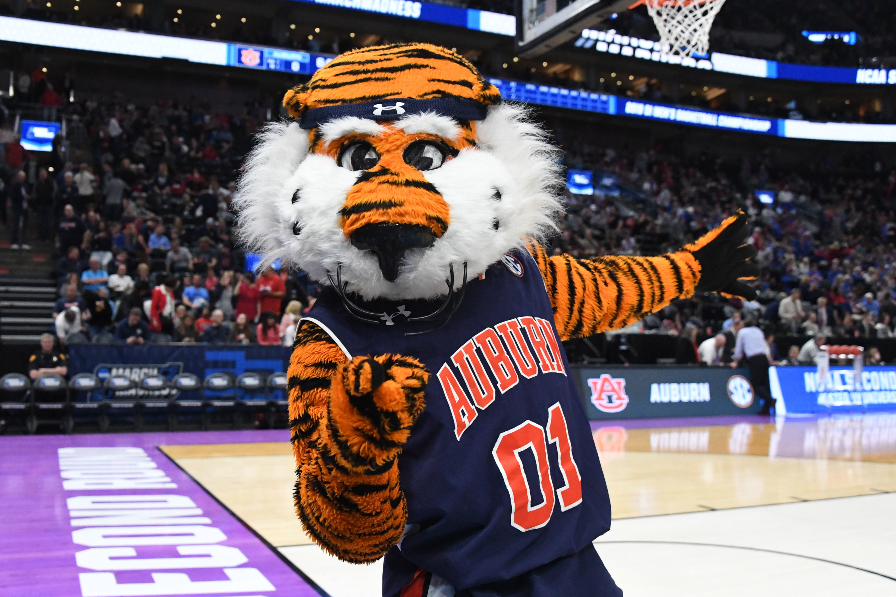

My new Mascot is Albany Aubie the Tiger
Aubie's existence began as a cartoon character that first appeared on the Auburn/Hardin-Simmons football
program cover on October 3, 1959. Birmingham Post-Herald artist Phil Neel created the cartoon Tiger who
continued to adorn Auburn program covers for 18 years.
AUBIE'S NATIONAL TITLES Years and Fun it had
- Aubie the Tiger has won the first match in Capital One Mascot of the Year - 2014 and they have celebrated by
giving away the little tiger dolls
- The other years UCA Mascot won National Champion - 1991, 1995, 1996, 1999, 2003, 2006, 2012, 2014, 2016 and
they have showed their grattitude in different ways
- Aubie got the Mascot Hall of Fame - First Inductee in the year 2006 and they have done the charity to the
children

Bact to Index Page